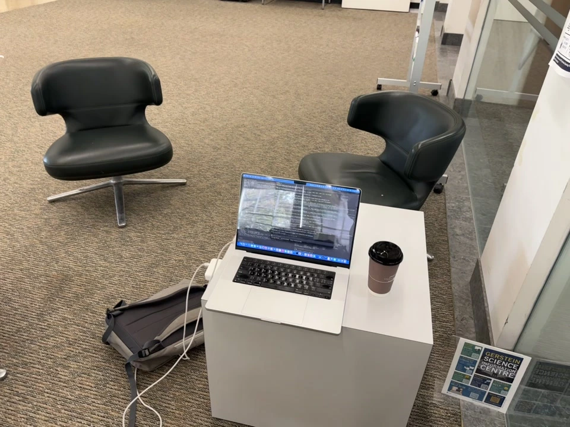
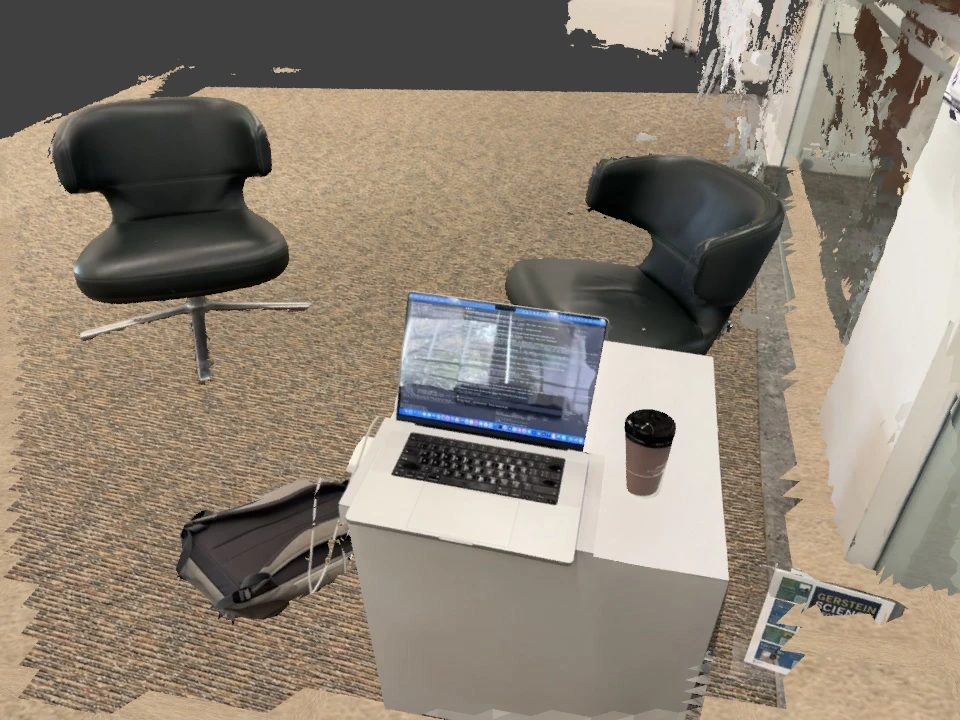

Case study 02 · Egocentric video
A room.
Seen in motion.
Walk around a scene. Recover where the camera went. Give the objects their own place in a world a robot can practice in.
15.7 seconds of video · 31 recovered keyframe poses · multi-view reconstruction prototype
SimFoundry rebuild ↗ · capture prepared; GPU training pending. The scene below remains the earlier baseline.
Loading reconstructed surfaces…
Click an object to select it
Drag an object to move it. Shift + drag lifts or lowers it. Drag the orange hinge handle to fold the screen. Drag the background to orbit. R restores the selected pose.
Select and drag objects directly in the scene. Scrub to track the camera through time. The moving map is an offline replay of reconstructed observations; camera poses between the 2 Hz keyframes are interpolated. Dragging previews object transforms. The lid uses swept collision checks against the keyboard, tabletop and floor; the browser is not a dynamics simulator.
Watch the reconstruction
The path. The observations.
The original moment.
Exported at 15 fps. The map accumulates offline reconstructed observations; this is not a benchmark of real-time inference.
Appearance matters
The source is the reference.
Multi-view depth recovers surfaces. SAM provides object masks. The captured photographs supply texture and existing illumination. Blender renders provide a second check on the exported geometry.


Input-view reconstruction check, not an independent novel-view test. Chairs and backpack now have closed, intersection-free visual surfaces with inferred backs. The keyboard footprint is refitted and the floor extends through the recorded view. Reflective walls and unobserved geometry remain unresolved. Captured lighting is baked into the appearance; accurate relighting is not established.
Measured, not assumed
Models earn their place.
The same sparse tracks compare three depth models. Per-frame scale and shift are fitted using 80% of tracks, then checked against the withheld 20%.
| Method | Median relative disagreement | Role |
|---|---|---|
| Depth Anything V2 Small | 2.13% | Single-image baseline |
| Depth Anything 3 Small | 1.11% | Camera-conditioned multi-view baseline |
| Depth Anything 3 Large | 0.73% | Selected multi-view depth |
| SAM ViT-B | No ground-truth masks supplied | Box-prompted object separation |
| SAM 2.1 Hiera Tiny | 471 frames · 6 tracked objects | Forward/backward video mask propagation |
| COLMAP | 0.79 px reprojection residual | Cameras and sparse geometry |
| Apple SHARP | 1.18 M predicted Gaussians · 56.9 s CPU | Single-image appearance comparison ↗ |
| gsplat | Training not run | gsplat 1.6.0 installed; CUDA training unavailable on this machine |
These checks measure agreement with the shared SfM reconstruction, not independent depth accuracy. The images also condition the depth model. Full-rate SAM 2 tracking processed all 471 decoded frames at 512-pixel model input in 1,055 seconds on CPU. Each displayed mask follows the video presentation timestamp; this is offline replay, not live inference. Scale assumes the cup is 17 cm tall. The later video localizes the original stills; the stills then supply additional fixed-room surfaces for this combined reconstruction. No claim of exact geometry, online inference, learned manipulation or real-robot transfer is made.
Toward manipulation
Appearance and contact.
Two things to verify.
The simulation separates fixed room structure from movable objects. Scanned visual surfaces preserve observations; simpler collision bodies make contact simulation tractable. Mass, friction and unseen geometry remain assumptions until measured.
Backpack geometry is currently rigid. Thin cables and distant room contents are part of the captured background, not validated manipulable assets. Live updates and policy fine-tuning remain future experiments.